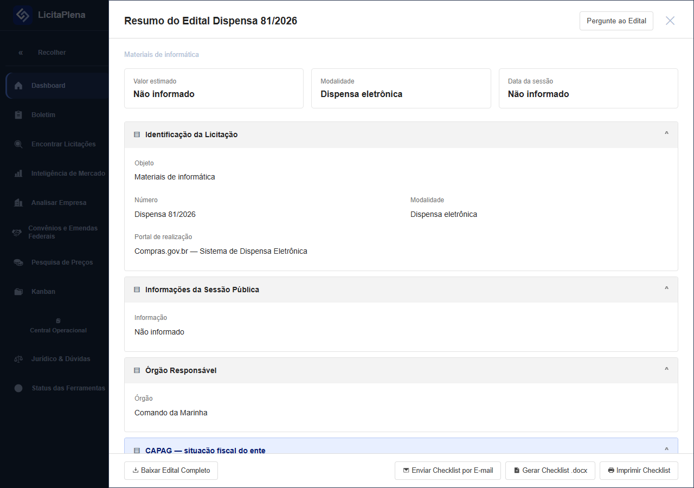

Primeiro módulo aplicado ao código existente, aproveitando a implementação de documentos da outra conversa. Estas capturas usam dados de teste e não representam produção.
Resumo e e-mail
Os testes comparam os hashes do HTML anterior, para texto simples e resumo estruturado. Quando a nova opção não é marcada, a saída permanece idêntica. Os botões novos são acrescentados ao final; o corpo não foi redesenhado.
Ver e-mail de teste com os dois botõesO token do exemplo é fictício; não envia nem registra resposta real.

Verificação e próximo passo
642 testes JavaScript passaram; quatro legados ignorados. Lint sem erros (50 avisos existentes), build aprovado, SQL local e UI Edge em 1280/375 pixels aprovados. Dois testes existentes do robô passaram por execução direta.
Sem envio real, sem migração remota, sem deploy. A aprovação fica desativada até instalar supabase/decisao_oportunidade.sql em homologação, conferir permissões, implantar API/página e então configurar DECISAO_CLIENTE_ATIVA=1. Desativar a opção preserva o envio habitual.
O link identifica seu portador, não comprova identidade por assinatura. Contatos locais não sincronizam entre computadores. O retorno por Responder continua na caixa institucional; não foi alterado nesta etapa.